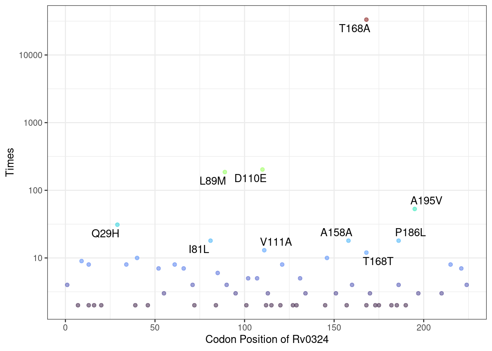

Chapter 4 Mutation Screening and Analysis
The Mtb_mut object serves as the primary data structure for all downstream analyses in our package. We provide pre-processed qs objects for several common bacterial species:
# Load the pre-built Mycobacterium tuberculosis mutation object
Mtb_mut <- qread("example/Mtb_mut_obj.qs")
# We can see Mtb_mut S6 object contains a comprehensive set of attributes and methods designed for efficient mutation analysis.
Mtb_mut## <Mutation Object>
## Public:
## calculate_NJ: function (num_thread = 1, snp_range = c(0.05, 0.95))
## clone: function (deep = FALSE)
## estimate_imp: function (gene, gene_type = "GENE", metadata_col = NULL, upstream_length = NULL)
## estimate_imp_all: function ()
## Evolution_dt: function (x)
## filter_sample: function (sample_name = NULL, mutation_index = NULL, opposite = F)
## filter_snp: function (gene, gene_type = "INDEX", upstream_length = NULL)
## get_metadata: function ()
## initialize: function (snp_anno, snp_data, metadata = NULL, remove_genes_dt = NA,
## metadata: data.frame
## ML_data_dt: function (selected_pheno)
## modification_info: list
## MutNumPlot: function (locus_tag, limit = 1, label_num = 10, show_synomonous = T,
## MutTree: function (locus_tag, limit = 5, size = 20, metadata_col = NULL)
## nj_distance: NA
## snp_list: list
## Private:
## initial_sample: NA4.1 Basic Mutation Statistics
# Calculate occurrence frequency for all mutations
all_mut <- Mtb_mut$estimate_imp("all")
head(all_mut)## CHROM POS TYPE FTYPE STRAND NT_POS AA_POS
## A8Csnp NC_018143 8 snp CDS + 8/1524 3/507
## G10Csnp NC_018143 10 snp CDS + 10/1524 4/507
## A11Csnp NC_018143 11 snp CDS + 11/1524 4/507
## C12Tsnp NC_018143 12 snp CDS + 12/1524 4/507
## C15Tsnp NC_018143 15 snp CDS + 15/1524 5/507
## G16Csnp NC_018143 16 snp CDS + 16/1524 6/507
## EFFECT LOCUS_TAG_NEW GENE
## A8Csnp missense_variant c.8A>C p.Asp3Ala RVBD_RS00005 dnaA
## G10Csnp missense_variant c.10G>C p.Asp4His RVBD_RS00005 dnaA
## A11Csnp missense_variant c.11A>C p.Asp4Ala RVBD_RS00005 dnaA
## C12Tsnp synonymous_variant c.12C>T p.Asp4Asp RVBD_RS00005 dnaA
## C15Tsnp synonymous_variant c.15C>T p.Pro5Pro RVBD_RS00005 dnaA
## G16Csnp missense_variant c.16G>C p.Gly6Arg RVBD_RS00005 dnaA
## PRODUCT AA_effect_short
## A8Csnp chromosomal replication initiator protein DnaA D3A
## G10Csnp chromosomal replication initiator protein DnaA D4H
## A11Csnp chromosomal replication initiator protein DnaA D4A
## C12Tsnp chromosomal replication initiator protein DnaA D4D
## C15Tsnp chromosomal replication initiator protein DnaA P5P
## G16Csnp chromosomal replication initiator protein DnaA G6R
## LOCUS_TAG INDEX Acetylation Phosphorylation Times
## A8Csnp Rv0001 A8Csnp NA NA 2
## G10Csnp Rv0001 G10Csnp NA NA 1
## A11Csnp Rv0001 A11Csnp NA NA 28
## C12Tsnp Rv0001 C12Tsnp NA NA 1
## C15Tsnp Rv0001 C15Tsnp NA NA 2
## G16Csnp Rv0001 G16Csnp NA NA 1# Analyze mutations in Rv0324 (default: coding sequence only)
Rv0324_mut <- Mtb_mut$estimate_imp("Rv0324", gene_type = "LOCUS_TAG")## filter genes## remain 51181 sample and 191 snps# Now you can see the total occurance time of each mutations in Rv0324 for the Mtb_mut
head(Rv0324_mut)## CHROM POS TYPE FTYPE STRAND NT_POS AA_POS
## A391352Tsnp NC_018143 391352 snp CDS + 1/681 1/226
## G391354Csnp NC_018143 391354 snp CDS + 3/681 1/226
## G391355Asnp NC_018143 391355 snp CDS + 4/681 2/226
## C391356Asnp NC_018143 391356 snp CDS + 5/681 2/226
## G391359Asnp NC_018143 391359 snp CDS + 8/681 3/226
## C391365Tsnp NC_018143 391365 snp CDS + 14/681 5/226
## EFFECT LOCUS_TAG_NEW GENE
## A391352Tsnp initiator_codon_variant c.1A>T p.Met1? RVBD_RS01710 Rv0324
## G391354Csnp initiator_codon_variant c.3G>C p.Met1? RVBD_RS01710 Rv0324
## G391355Asnp missense_variant c.4G>A p.Ala2Thr RVBD_RS01710 Rv0324
## C391356Asnp missense_variant c.5C>A p.Ala2Asp RVBD_RS01710 Rv0324
## G391359Asnp missense_variant c.8G>A p.Gly3Glu RVBD_RS01710 Rv0324
## C391365Tsnp missense_variant c.14C>T p.Ser5Phe RVBD_RS01710 Rv0324
## PRODUCT
## A391352Tsnp metalloregulator ArsR/SmtB family transcription factor
## G391354Csnp metalloregulator ArsR/SmtB family transcription factor
## G391355Asnp metalloregulator ArsR/SmtB family transcription factor
## C391356Asnp metalloregulator ArsR/SmtB family transcription factor
## G391359Asnp metalloregulator ArsR/SmtB family transcription factor
## C391365Tsnp metalloregulator ArsR/SmtB family transcription factor
## AA_effect_short LOCUS_TAG INDEX Acetylation Phosphorylation
## A391352Tsnp M1? Rv0324 A391352Tsnp NA NA
## G391354Csnp M1? Rv0324 G391354Csnp NA NA
## G391355Asnp A2T Rv0324 G391355Asnp NA NA
## C391356Asnp A2D Rv0324 C391356Asnp NA NA
## G391359Asnp G3E Rv0324 G391359Asnp NA NA
## C391365Tsnp S5F Rv0324 C391365Tsnp NA NA
## Times
## A391352Tsnp 1
## G391354Csnp 4
## G391355Asnp 1
## C391356Asnp 1
## G391359Asnp 1
## C391365Tsnp 1## Include 300bp upstream regulatory region
Rv0324_mut <- Mtb_mut$estimate_imp(gene = "Rv0324",
gene_type = "LOCUS_TAG",
upstream_length = 300)## filter genes## remain 51181 sample and 293 snpsYou should keep in mind that this statistical result will dynamically update alongside changes in the object. For example, if you filter the dataset to isolate strains with specific drug-resistance mutations and generate a new object, the statistics will then reflect the mutation status of Rv0324 exclusively within those drug-resistant strains.
4.2 katG Mutation Analysis (Isoniazid Resistance)
We will now demonstrate the basic usage of this object through a katG mutation analysis. This project begins by filtering Mycobacterium tuberculosis strains containing the classic isoniazid resistance mutation katG R463L. It then calculates lineage-specific differences in all katG mutations between R463L strains and wild-type (WT) strains. Additionally, we assess whether each mutation in embB (the ethambutol resistance gene) shows statistically significant differences in prevalence between R463L and WT strain group
## filter genes## remain 51181 sample and 1271 snps# Filter strains with R463L variant (a common INH resistance mutation)
katG_R463L_index <- katG_mut %>%
filter(AA_effect_short == "R463L") %>%
pull(INDEX)
# filter_sample function will keep samples with katG_R463L mutation.
katG_R463L <- Mtb_mut$filter_sample(mutation_index = katG_R463L_index)## remain 24610 sample and 1293186 snps# To examine how katG mutations are distributed across different bacterial
# lineages, we can perform lineage-specific frequency calculations
# statistically:
Mtb_mut$estimate_imp("katG",gene_type = "GENE",metadata_col = "Lineage") %>%
filter(INDEX %in% katG_R463L_index)## filter genes## remain 51181 sample and 1271 snps## calculate mutation frequency## CHROM POS TYPE FTYPE STRAND NT_POS AA_POS
## C2154731Asnp NC_018143 2154731 snp CDS - 1388/2223 463/740
## CGG2154731AGTcomplex NC_018143 2154731 complex CDS - 1388/2223 462/740
## CG2154731AAcomplex NC_018143 2154731 complex CDS - 1388/2223 463/740
## CGG2154731AGAcomplex NC_018143 2154731 complex CDS - 1388/2223 462/740
## EFFECT
## C2154731Asnp missense_variant c.1388G>T p.Arg463Leu
## CGG2154731AGTcomplex missense_variant c.1386_1388delCCGinsACT p.Arg463Leu
## CG2154731AAcomplex missense_variant c.1387_1388delCGinsTT p.Arg463Leu
## CGG2154731AGAcomplex missense_variant c.1386_1388delCCGinsTCT p.Arg463Leu
## LOCUS_TAG_NEW GENE PRODUCT AA_effect_short
## C2154731Asnp RVBD_RS10020 katG catalase/peroxidase HPI R463L
## CGG2154731AGTcomplex RVBD_RS10020 katG catalase/peroxidase HPI R463L
## CG2154731AAcomplex RVBD_RS10020 katG catalase/peroxidase HPI R463L
## CGG2154731AGAcomplex RVBD_RS10020 katG catalase/peroxidase HPI R463L
## LOCUS_TAG INDEX Acetylation Phosphorylation
## C2154731Asnp Rv1908c C2154731Asnp NA NA
## CGG2154731AGTcomplex Rv1908c CGG2154731AGTcomplex NA NA
## CG2154731AAcomplex Rv1908c CG2154731AAcomplex NA NA
## CGG2154731AGAcomplex Rv1908c CGG2154731AGAcomplex NA NA
## percents_L2 percents_L4 percents_L1 percents_L3
## C2154731Asnp 0.98083 0.0021 0.98321 0.9801
## CGG2154731AGTcomplex 0.00007 0.0000 0.00000 0.0000
## CG2154731AAcomplex 0.00007 0.0000 0.00000 0.0000
## CGG2154731AGAcomplex 0.00007 0.0000 0.00000 0.0000
## percents_L5 percents_L6 percents_LBOV percents_L7
## C2154731Asnp 0.99448 0.98795 0.995 0.98113
## CGG2154731AGTcomplex 0.00000 0.00000 0.000 0.00000
## CG2154731AAcomplex 0.00000 0.00000 0.000 0.00000
## CGG2154731AGAcomplex 0.00000 0.00000 0.000 0.00000# Analysis of Drug Resistance Mutation Co-occurrence Patterns
# Comparative Analysis of embB Mutations in katG R463L Strains vs. WT Strains
embB_compare <- Mtb_mut$estimate_imp("embB",gene_type = "GENE",metadata_col = katG_R463L_index[1])## filter genes## remain 51181 sample and 1882 snps## calculate mutation frequency# Display significant non-synonymous embB mutations
embB_compare %>%
arrange(FDR) %>%
filter(!str_detect(EFFECT, "synonymous_variant")) %>%
head()## CHROM POS TYPE FTYPE STRAND NT_POS AA_POS
## A4247824Csnp NC_018143 4247824 snp CDS + 1133/3297 378/1098
## A4246729Gsnp NC_018143 4246729 snp CDS + 38/3297 13/1098
## A4247607Gsnp NC_018143 4247607 snp CDS + 916/3297 306/1098
## T4247580Gsnp NC_018143 4247580 snp CDS + 889/3297 297/1098
## A4249935Gsnp NC_018143 4249935 snp CDS + 3244/3297 1082/1098
## T4247691Csnp NC_018143 4247691 snp CDS + 1000/3297 334/1098
## EFFECT LOCUS_TAG_NEW GENE
## A4247824Csnp missense_variant c.1133A>C p.Glu378Ala RVBD_RS20020 embB
## A4246729Gsnp missense_variant c.38A>G p.Asn13Ser RVBD_RS20020 embB
## A4247607Gsnp missense_variant c.916A>G p.Met306Val RVBD_RS20020 embB
## T4247580Gsnp missense_variant c.889T>G p.Ser297Ala RVBD_RS20020 embB
## A4249935Gsnp missense_variant c.3244A>G p.Thr1082Ala RVBD_RS20020 embB
## T4247691Csnp missense_variant c.1000T>C p.Tyr334His RVBD_RS20020 embB
## PRODUCT AA_effect_short LOCUS_TAG INDEX
## A4247824Csnp arabinosyltransferase EmbB E378A Rv3795 A4247824Csnp
## A4246729Gsnp arabinosyltransferase EmbB N13S Rv3795 A4246729Gsnp
## A4247607Gsnp arabinosyltransferase EmbB M306V Rv3795 A4247607Gsnp
## T4247580Gsnp arabinosyltransferase EmbB S297A Rv3795 T4247580Gsnp
## A4249935Gsnp arabinosyltransferase EmbB T1082A Rv3795 A4249935Gsnp
## T4247691Csnp arabinosyltransferase EmbB Y334H Rv3795 T4247691Csnp
## Acetylation Phosphorylation count_total count_1 count_0 n1
## A4247824Csnp NA NA 5807 5753 54 24610
## A4246729Gsnp NA NA 645 639 6 24610
## A4247607Gsnp NA NA 3530 2328 1202 24610
## T4247580Gsnp NA NA 377 6 371 24610
## A4249935Gsnp NA NA 200 198 2 24610
## T4247691Csnp NA NA 165 163 2 24610
## n0 P_value FDR
## A4247824Csnp 26571 0.000000e+00 0.000000e+00
## A4246729Gsnp 26571 5.938948e-150 1.397138e-147
## A4247607Gsnp 26571 1.993314e-107 4.168242e-105
## T4247580Gsnp 26571 1.696397e-73 3.192620e-71
## A4249935Gsnp 26571 3.926395e-60 6.717705e-58
## T4247691Csnp 26571 4.117553e-49 5.535168e-47The analysis reveals that the mutation of embB E306V appears at significantly higher frequency in katG R463L strains, which may reflect selection pressure of combination therapy, as INH and ethambutol (EMB) are frequently co-administered.
# Generate and visualize mutation frequency tree of embB mutations in katG R463L strains and compare lineage distribution
mut_tree <- katG_R463L$MutTree(
locus_tag = "Rv3795", # embB gene locus
limit = 10, # Display top 10 mutations
metadata_col = "Lineage" # compare lineage distribution
)## remain 24610 sample and 1534 snps
## remain 729 significant snps
## remain 61 samples with Freq >= 10
4.3 Multi-omics Integration for Discovery of Non-neutral Mutations
Post-translational modification (PTM) omics analysis have identified many PTM sites in pathogens.
Here, we demonstrate the utility of our package using acetylation proteomics data from Mycobacterium tuberculosis (Mtb) generated by our lab (Xie et al. (2015)), combined with recently published O-phosphorylation proteomics data (Frando et al. (2023)). This integrated approach enables rapid identification of evolutionarily positively selected phosphorylation sites.
# The data file must contain at least two required columns: GENE/LOCUS_TAG and AA_POS (amino acid position)
# Load experimentally validated phosphorylation sites
pho_info <- read.csv("example/Mtb_pho.csv")
head(pho_info)## GENE Phosphopeptide LOCUS_TAG AA_POS AA Dataset Ascore
## 1 dnaA YTFDT@FVIGASNR Rv0001 176 T LF NA
## 2 dnaA AYNPLFIWGES@GLGK Rv0001 210 S LF NA
## 3 dnaA YVSTEEFTNDFINS@LRDDRK Rv0001 249 S LF NA
## 4 dnaA QLAT@LEDRLR Rv0001 313 T LF NA
## 5 dnaA QLAT@LEDR Rv0001 313 T LF NA
## 6 dnaA VTAFAS@LNK Rv0001 384 S LF NA
## MaxQuant.Probability Pos
## 1 1 176
## 2 1 210
## 3 1 249
## 4 1 313
## 5 1 313
## 6 1 384# Load experimentally validated acetylation sites
ace_info <- read.csv("example/Mtb_ace.csv")
# # Using the AddModificationInfo function, we integrate PTM information into the mutation data. This step annotates whether each mutation occurs at known PTM sites.
# As Mtb_mut here has already Add Modification Info, we will not run these code below.
# Mtb_mut <- AddModificationInfo(Mtb_mut,
# modification_dt = ace_info,
# type = "Acetylation")
#
# Mtb_mut <- AddModificationInfo(Mtb_mut,
# modification_dt = pho_info,
# type = "Phosphorylation")
# The enhanced mutation annotation now includes two new columns:
# Acetylation: Indicates if the site is a known acetylation site
# Phosphorylation: Indicates if the site is a known phosphorylation site
Mtb_mut$snp_list$snp_anno %>% head()## CHROM POS TYPE FTYPE STRAND NT_POS AA_POS
## A8Csnp NC_018143 8 snp CDS + 8/1524 3/507
## G10Csnp NC_018143 10 snp CDS + 10/1524 4/507
## A11Csnp NC_018143 11 snp CDS + 11/1524 4/507
## C12Tsnp NC_018143 12 snp CDS + 12/1524 4/507
## C15Tsnp NC_018143 15 snp CDS + 15/1524 5/507
## G16Csnp NC_018143 16 snp CDS + 16/1524 6/507
## EFFECT LOCUS_TAG_NEW GENE
## A8Csnp missense_variant c.8A>C p.Asp3Ala RVBD_RS00005 dnaA
## G10Csnp missense_variant c.10G>C p.Asp4His RVBD_RS00005 dnaA
## A11Csnp missense_variant c.11A>C p.Asp4Ala RVBD_RS00005 dnaA
## C12Tsnp synonymous_variant c.12C>T p.Asp4Asp RVBD_RS00005 dnaA
## C15Tsnp synonymous_variant c.15C>T p.Pro5Pro RVBD_RS00005 dnaA
## G16Csnp missense_variant c.16G>C p.Gly6Arg RVBD_RS00005 dnaA
## PRODUCT AA_effect_short
## A8Csnp chromosomal replication initiator protein DnaA D3A
## G10Csnp chromosomal replication initiator protein DnaA D4H
## A11Csnp chromosomal replication initiator protein DnaA D4A
## C12Tsnp chromosomal replication initiator protein DnaA D4D
## C15Tsnp chromosomal replication initiator protein DnaA P5P
## G16Csnp chromosomal replication initiator protein DnaA G6R
## LOCUS_TAG INDEX Acetylation Phosphorylation
## A8Csnp Rv0001 A8Csnp NA NA
## G10Csnp Rv0001 G10Csnp NA NA
## A11Csnp Rv0001 A11Csnp NA NA
## C12Tsnp Rv0001 C12Tsnp NA NA
## C15Tsnp Rv0001 C15Tsnp NA NA
## G16Csnp Rv0001 G16Csnp NA NA# Filter mutations occurring at phosphorylation sites
Mtb_mut$snp_list$snp_anno %>% filter(Phosphorylation==T) %>% head()## CHROM POS TYPE FTYPE STRAND NT_POS AA_POS
## A526Gsnp NC_018143 526 snp CDS + 526/1524 176/507
## C527Tsnp NC_018143 527 snp CDS + 527/1524 176/507
## C629Gsnp NC_018143 629 snp CDS + 629/1524 210/507
## C630Tsnp NC_018143 630 snp CDS + 630/1524 210/507
## C630Gsnp NC_018143 630 snp CDS + 630/1524 210/507
## C876Gsnp NC_018143 876 snp CDS + 876/1524 292/507
## EFFECT LOCUS_TAG_NEW GENE
## A526Gsnp missense_variant c.526A>G p.Thr176Ala RVBD_RS00005 dnaA
## C527Tsnp missense_variant c.527C>T p.Thr176Met RVBD_RS00005 dnaA
## C629Gsnp missense_variant c.629C>G p.Ser210Cys RVBD_RS00005 dnaA
## C630Tsnp synonymous_variant c.630C>T p.Ser210Ser RVBD_RS00005 dnaA
## C630Gsnp synonymous_variant c.630C>G p.Ser210Ser RVBD_RS00005 dnaA
## C876Gsnp synonymous_variant c.876C>G p.Thr292Thr RVBD_RS00005 dnaA
## PRODUCT AA_effect_short
## A526Gsnp chromosomal replication initiator protein DnaA T176A
## C527Tsnp chromosomal replication initiator protein DnaA T176M
## C629Gsnp chromosomal replication initiator protein DnaA S210C
## C630Tsnp chromosomal replication initiator protein DnaA S210S
## C630Gsnp chromosomal replication initiator protein DnaA S210S
## C876Gsnp chromosomal replication initiator protein DnaA T292T
## LOCUS_TAG INDEX Acetylation Phosphorylation
## A526Gsnp Rv0001 A526Gsnp NA TRUE
## C527Tsnp Rv0001 C527Tsnp NA TRUE
## C629Gsnp Rv0001 C629Gsnp NA TRUE
## C630Tsnp Rv0001 C630Tsnp NA TRUE
## C630Gsnp Rv0001 C630Gsnp NA TRUE
## C876Gsnp Rv0001 C876Gsnp NA TRUEThe MutNumPlot function enables visualization of mutation frequency distribution for specific genes, with PTM sites highlighted. This visualization helps identify key mutations that may affect protein post-translational modifications.

# PTM sites (acetylation and phosphorylation) are highlighted with special colors
Mtb_mut$MutNumPlot("Rv0324",Modification = c("Acetylation","Phosphorylation"),
show_synomonous = T, # show synomonous mutation
limit = 5, # minimun mutation counts to plot
label_num = 15) # label numbers of top mutation counts to show
Critically, we experimentally validated that mutation of the phosphosite T168A in Rv0324 partially rescues growth arrest during Rv0324 overexpression in Mycobacterium semgmatis—a cornerstone model organism in mycobacterial research. This finding underscores the practical utility of this straightforward functional approach.